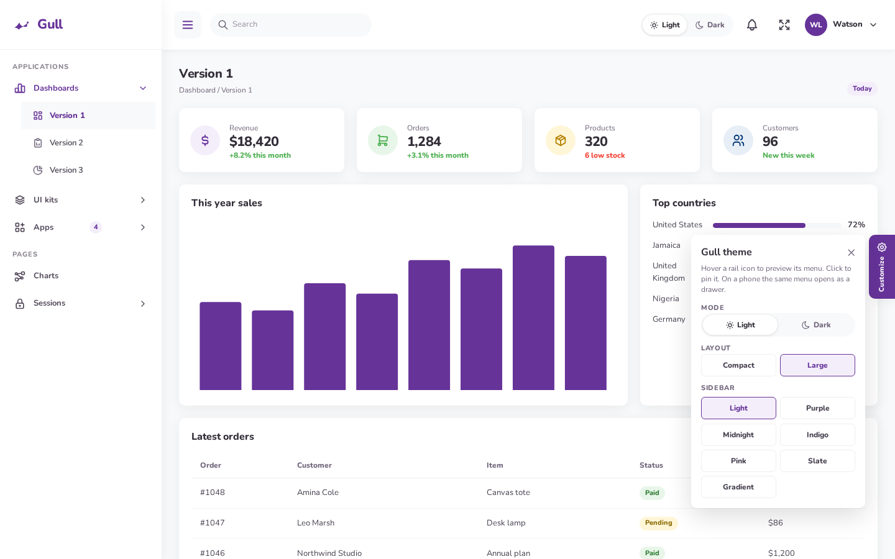
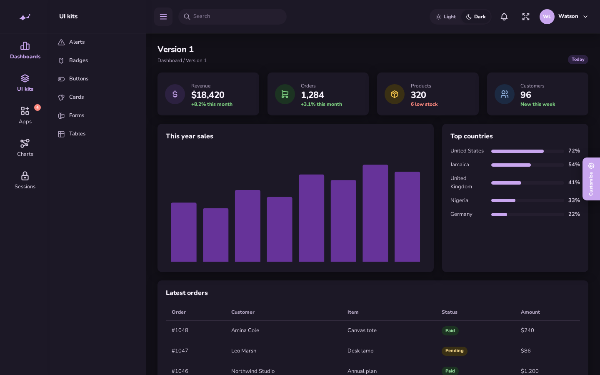
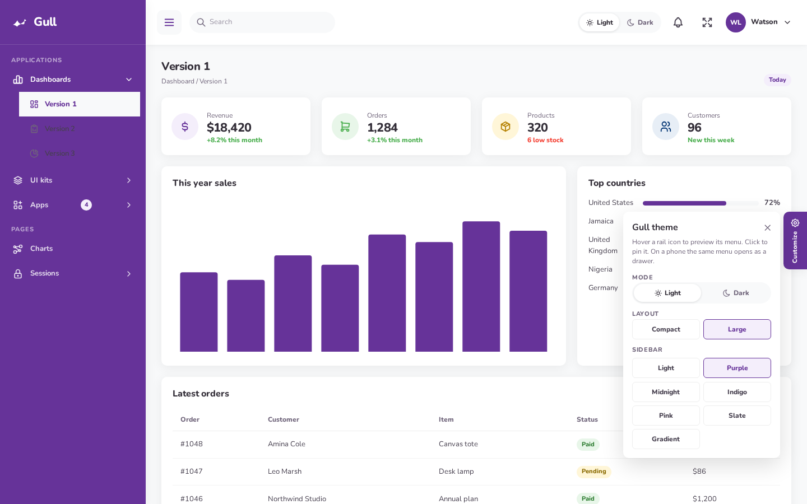
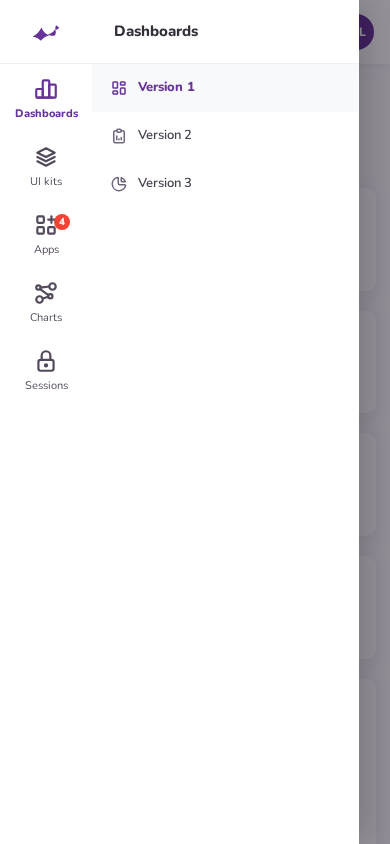
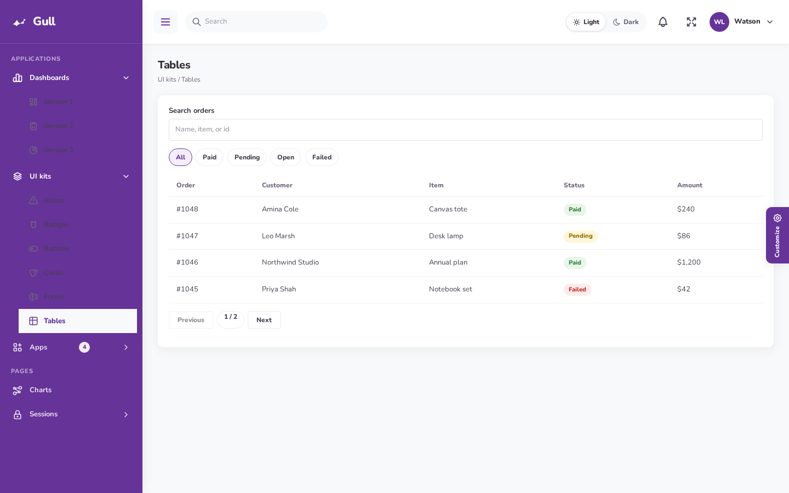
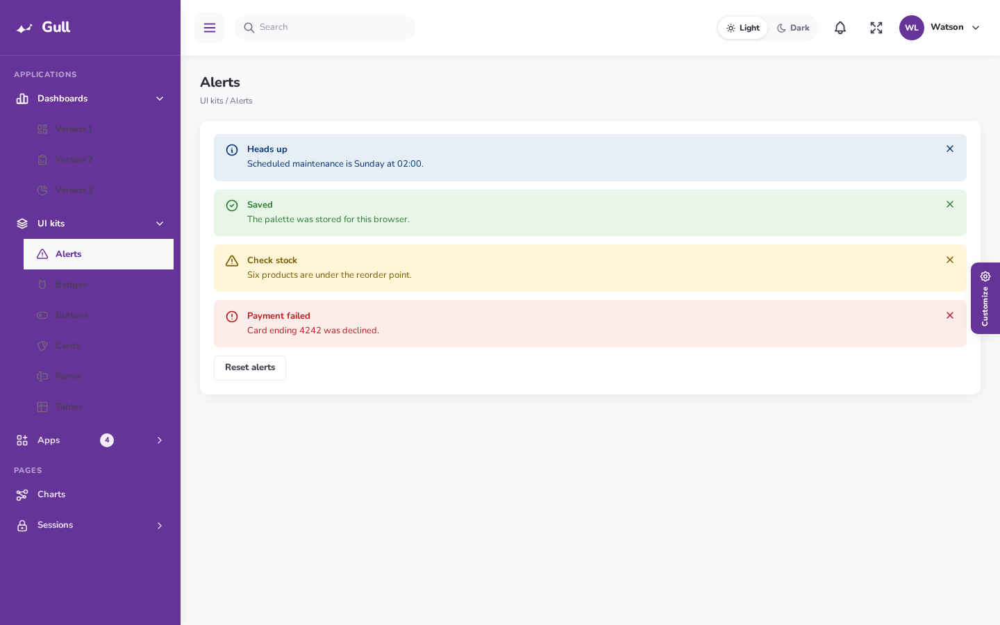
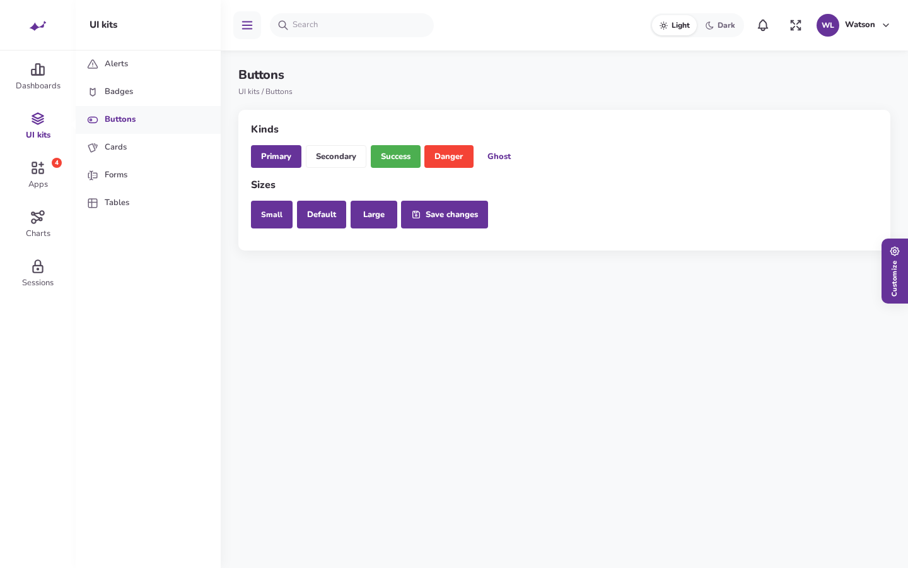

Two menus, one plugin
Compact is the default. Large is a click away. The hamburger on desktop pins the flyout or slides the large sidebar away, instead of using Filament’s own collapse.
Designed for teams who spend hours in their admin panel, Fascia pairs elegant visuals with practical navigation. Switch between a compact icon rail or a spacious accordion sidebar, enjoy beautifully crafted light and dark themes, and give your Filament app a polished, professional feel.

Look and feel
The page is 13px Nunito. Cards sit on a quiet shadow, 0 4px 20px 1px at 6% black, with a 10px radius. Primary actions and the active rail item use #663399.
| Layout | How the menu works |
|---|---|
| Compact | A 120px rail. Each parent is a Tabler icon with a label under it. Hover opens a 230px white flyout. Click pins it. A triangle marks the open section. |
| Large | A 260px sidebar. Section labels are uppercase. Items accordion in place, icon then label. |
| Phone | Both layouts become an off-canvas drawer with a dimmed backdrop. Targets are at least 44px. Compact keeps the icon rail and shows children beside it. |





Features
Compact is the default. Large is a click away. The hamburger on desktop pins the flyout or slides the large sidebar away, instead of using Filament’s own collapse.
Outline icons from the same 24×24 grid. 26px on the rail, 18px in the flyout, 20px in the large sidebar, 22px in the top bar.
A Light / Dark switch sits in the top bar. It is also on the sign-in screen and in Customize. Stored as fascia-mode.
Light, purple, midnight, indigo, pink, slate, and gradient. Stored as fascia-skin. Set customizer to false to hide the gear tab.
Tables, alerts, buttons, badges, cards, and forms keep Filament behavior and pick up the Nunito type, purple primary, and soft cards.
CSS and a small menu script load through Filament render hooks. Register the plugin and the chrome is there.




Pricing
Same packages as Soffit. Two plans, full theme files, light and dark mode, and 1 year of updates. Fascia checkout links are separate and will be pasted in when they are ready.
One production application or client dashboard.
$19 / site
Includes 1 year of updates
Freelancers, agencies, and teams with more than one panel.
$49 / year
1 year of updates on every project
Checkout URLs are not Soffit’s. Until the Fascia links are supplied, both buttons go to @iamspiggle.
Install
PHP 8.2 or newer. Laravel 11, 12, or 13. Filament 4 or 5. Fascia attaches itself to every panel.
1. Require the package and Tabler icons
composer require spiggle/filament-fascia-theme
composer require secondnetwork/blade-tabler-icons
php artisan filament:assets2. Optional: pin it to one panel
// config: 'auto_register' => false
use Spiggle\FilamentFasciaTheme\FilamentFasciaThemePlugin;
$panel->plugin(FilamentFasciaThemePlugin::make());Install spiggle/filament-theme-switcher and Fascia shows up in the header menu. The switcher attaches itself to every Filament 5 panel. It only lists themes that register, which Fascia and Soffit do. Fascia’s rail and stylesheet load only while Fascia is selected. Filament’s light/dark control stays separate.
Layout and skin defaults live in config/filament-fascia-theme.php. Visitors can still switch them. FASCIA_LAYOUT is compact or large. GULL_SIDEBAR is one of the skins below.
The parent NavigationItem has a URL. Leave the URL off parents that should open children. Fascia::parent() does this for you.
A navigation group and its items cannot both have icons. Leave the group icon off. Put icons on the parent and on each child.
Single Site is $19 for one production panel. Unlimited Projects is $49 for unlimited client and personal panels. Both include 1 year of updates and security fixes. The checkout links are Fascia’s own and are not the Soffit products.
In the browser, under fascia-mode. Layout is fascia-layout. Sidebar skin is fascia-skin. Nothing is written to the database.